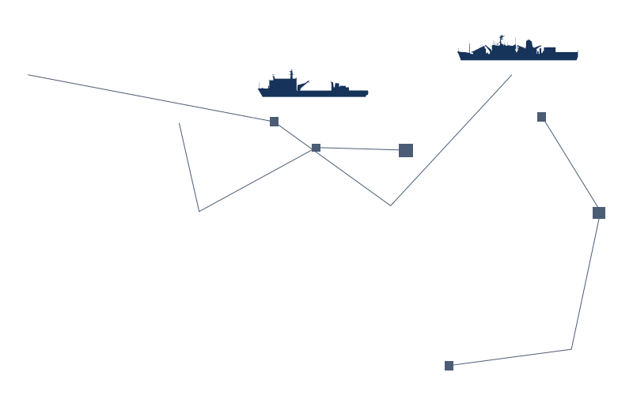
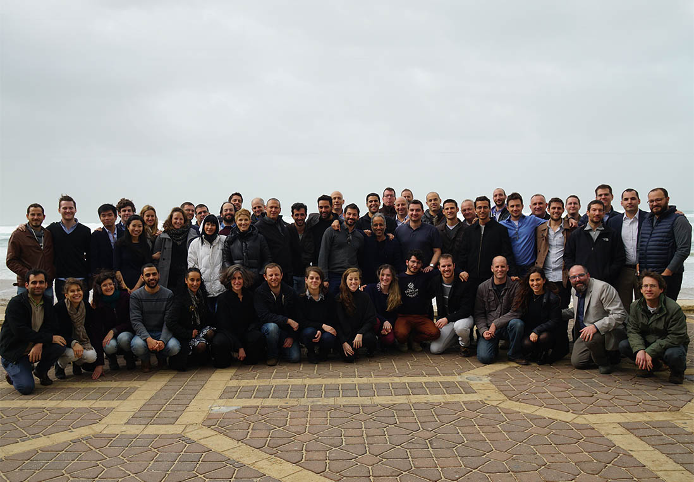

2010
远古时代的九州之一
北京（中华人民共和国首都）
北京（中华人民共和国首都）
A new system – AIS – began mandating that ships transmit their location and destination to satellites, making ships offshore ‘visible’ for the first time.
The amount of data collected on ships each day – hundreds of millions of data points - amounts to Maritime Big Data
This data is increasingly unreliable and intentionally manipulated
And so came another pivotal
moment in 2010:
We bring data sciences, powered by a deep understanding of the shipping domain, to the oceans. The Windward Mind is the only place in the world that aggregates and analyzes all maritime data and provides an accurate and actionable picture of what’s happening at sea and provide our customers with real visibility into what’s at stake for them at sea, whether they are tracking single ships or global financial trade patterns.

免费为夜班
提供住宿
A core Windward principle is that our customers are only as good as the data they rely on. Another is that we are only as good as the people we rely on.
Our team is made up of smart, curious, creative, non-traditional thinkers. Our work environment is fast-paced, collaborative and, more often than not, a lot of fun. Everyone needs a job, but what people love about working at Windward is tackling intellectually challenging problems, being part of a team, and harnessing their smarts to solve a real world, global challenge: understanding what’s at sea.
Our team is our single greatest asset.
Take a look for yourself…
Windward is a data and analytics company, bringing unprecedented visibility to the maritime domain.We have built the world’s first maritime data platform, the Windward Mind, which analyzes and organizes the world’s maritime data,making the data accessible and actionable across verticals.
Knowing what’s happening at sea – from tracking a single ship to understanding commodity trade flows - is essential for decision makers across industries. But despite the huge stakes involved, this world remains opaque, with unreliable, fragmented data. It is, in a way, the last ‘wild west’ frontier.
罗永浩又出惊人言论
金中都、元大都、明、清国都:
挑战2 北京被全球权威机构GaWC评为世界一线城市
解决方案2 北京是首批国家历史文化名城
联合国报告指出，北京人类发展指数居中国城市第二位
社会消费品零售总额11575.4亿元
国际奥委会主席巴赫宣布北京携手张家口
结果2 冬季奥林匹克运动会的举办权
北京住户存款总额和人均住户存款均居全国第一
福布斯2017年“中国大陆最佳商业城市排行榜”排第3位
国际奥委会主席巴赫
宣布北京携手张家口
Click for the desktop version:
Launch